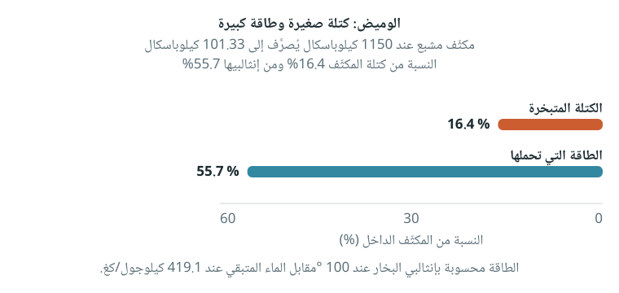
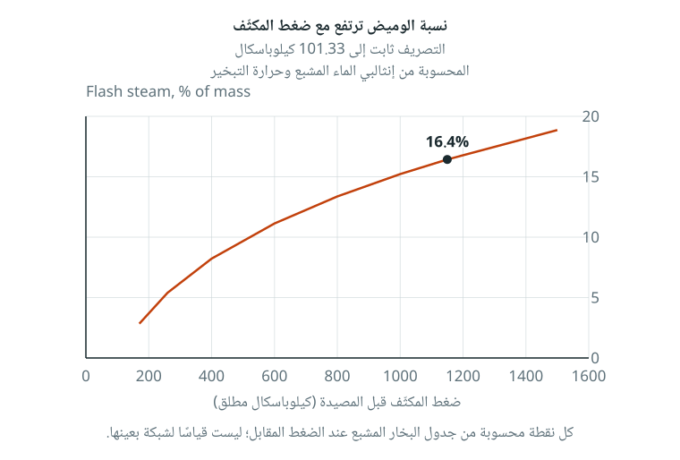

البخار الوميضي: ما يتبخّر من المكثّف عند هبوط الضغط
Flash steam
البخار الوميضي هو الجزء الذي يتبخّر من المكثّف لمجرد انخفاض ضغطه، لا لأن حرارة أُضيفت إليه. من 1150 إلى 101.33 كيلوباسكال تتبخّر 16.4% من الكتلة، لكن هذا البخار يحمل 55.7% من إنثالبي المكثّف؛ فالخسارة تُقاس بالطاقة لا بالكتلة.
في شبكة بخار صناعية يظهر عند مصرف المصائد نفَس أبيض متصل، ويُقرأ خطأً كتسرّب. المصدر ليس تسرّبًا: المكثّف الذي يغادر مبادلًا عند ضغط عالٍ يصل إلى المصيدة ماءً مشبعًا، فإذا انخفض ضغطه في خط الرجوع صارت حرارته أعلى من نقطة غليانه عند الضغط الجديد، فتبخّر جزء منه في اللحظة نفسها من حرارته المحسوسة الزائدة. هذا الجزء هو البخار الوميضي (Flash Steam)، وحجمه محسوم بموازنة طاقة لا بزمن ولا بسعة فتحة المصيدة.
مثال رقمي: مكثّف عند 1150 كيلوباسكال مطلق (186 درجة مئوية، إنثالبي الماء المشبع 790 كيلوجول/كغ) يُصرَّف إلى خط عند 101.33 كيلوباسكال. نقطة الغليان هناك 100 درجة مئوية، وإنثالبي الماء المشبع 419.1 كيلوجول/كغ، وحرارة التبخير 2,257 كيلوجول/كغ. الحرارة المحسوسة التي لا يستطيع الماء الاحتفاظ بها 790 − 419.1 = 370.9 كيلوجول لكل كيلوغرام، وكل كيلوغرام يتبخّر يستهلك 2,257 كيلوجول، فتتبخّر 16.4% من الكتلة.
النتيجة العملية أن النسبة بالكتلة تُخفي الأثر بالطاقة: تلك الكتلة الصغيرة تحمل 55.7% من إنثالبي المكثّف الداخل، لأن البخار الناتج عند 100 درجة مئوية يحمل 2676 كيلوجول/كغ مقابل 419.1 كيلوجول/كغ للماء المتبقي. ولو كان التصريف إلى 5 بار مانومترية (600 كيلوباسكال، 158.8 درجة مئوية) لكانت النسبة 11.1%، ولتدفق مكثّف 10 أطنان/ساعة يعني ذلك 1.11 طن/ساعة بخار منخفض الضغط يحمل 251 كيلوجول لكل كيلوغرام مكثّف، أي 698 كيلوواط. حين يُهوَّى الخط إلى السقف تُرمى هذه القدرة كلها؛ وحين يُوجَّه إلى مستهلك منخفض الضغط — تسخين مياه التغذية أو هواء الاحتراق أو غلاية ثانية — تُستعاد ضمن الشبكة بدل أن تخرج من فتحة التهوية.
كيف تعمل الظاهرة؟
السلسلة الفيزيائية ثلاث حلقات متصلة: الماء المشبع عند الضغط الأعلى يحمل إنثالبي الماء المشبع h_l,1 عند درجة الحرارة T1؛ وبعد تجاوز المصيدة يهبط الضغط إلى P2 فتصبح درجة التشبّع T2 أقل من T1؛ والفرق المحسوس بين الحالتين لا يمكن أن يبقى في السائل، لأن أي كمية فوق إنثالبي التشبّع عند الضغط الجديد تُبخّر ماءً. لا تدخل حرارة من خارج النظام: الطاقة تأتي من المكثّف نفسه، والتبخّر يبرد ما تبقّى حتى يستقر عند T2. يبدأ التبخّر من نوى فقاعات على جدران المصيدة والشوائب العالقة، ويكتمل عمليًّا في أجزاء من الثانية، ولهذا يُرى الوميض بعد المصيدة لا قبلها، وتُبنى خطوط المكثّف بأقطار تحتمل الحجم النوعي الكبير للبخار المتولّد فيها.
العلاقة بالأرقام
المعادلة: f = (h_l,1 − h_l,2) / h_fg,2، بشرط أن يكون المكثّف مشبعًا عند الضغط الأعلى. من جدول البخار المشبع: عند 1150 كيلوباسكال h_l,1 = 790، وعند 101.33 كيلوباسكال h_l,2 = 419.1 وh_fg,2 = 2,257 كيلوجول/كغ، فيكون f = 370.9 ÷ 2,257 = 16.4%، وهو ما تطابقه جداول الوميض المنشورة (16.5%) داخل حدود التدوير. والطاقة المحمولة: 0.164 × 2676 = 439.8 كيلوجول لكل كيلوغرام مكثّف، أي 55.7% من 790. والقدرة الحرارية = التدفق × f × إنثالبي البخار: لتدفق 10 أطنان/ساعة عند 600 كيلوباسكال تعطي 1.11 طن/ساعة و698 كيلوواط.
مفاهيم متقاربة
الخلط الأول نسبة الكتلة بنسبة الطاقة: 16.4% بالكتلة تُقرأ خسارة صغيرة، وهي 55.7% بالطاقة. والخلط الثاني أن الوميض عطب في المصيدة: المصيدة تعمل صحيحًا، والتبخّر نتيجة حتمية لهبوط الضغط، وسعة خط الرجوع واختيار المصيدة يُبنيان على هذه النسبة لا على حجم التسريب، ولذلك تنشر الجداول 0.11 كغ بخار لكل كيلوغرام مكثّف عند 5 بار مانومترية كقيمة تصميم لا كإنذار. والخلط الثالث أنه بخار حيّ أو تسرّب: البخار الحيّ يأتي من الغلاية عبر الشبكة، أما الوميض فيتولّد داخل المكثّف نفسه بلا إضافة حرارة، ويفترق عنهما في أن إغلاق المصيدة لا يوقفه بل يوقف تصريف المكثّف فيغرّق المبادل ويُفقد أداءه.
حدود التطبيق
المعادلة تفترض مكثّفًا مشبعًا تمامًا عند الضغط الأعلى، والواقع أن مبادلات كثيرة تخرج المكثّف دون التشبّع، وكل تبريد إضافي دون التشبّع ينقص نسبة الوميض نقصًا محسوسًا، فمن قدّرها من ضغط الشبكة وحده بالغ في التقدير. وتفترض ماءً نقيًّا بلا أملاح ذائبة ترفع نقطة الغليان، وبلا غازات مذابة تنطلق مع البخار فتغيّر الحجم وتحتاج تهوية. ولا تقول المعادلة كم يمكن استعادته فعلًا: الوميض المتاح قد لا يجد مستهلكًا منخفض الضغط في الموقع، والقرار الاقتصادي يقارن قيمة البخار المستعاد بكلفة خط الرجوع والمبادل الإضافي. وعند ضغوط تقترب من الحرجة تقترب حرارة التبخير من الصفر فتنفجر النسبة، والنموذج يفقد معناه هناك.


| الكمية | القيمة | المصدر |
|---|---|---|
| نسبة الكتلة المتبخّرة عند التصريف من 1150 إلى 101.33 كيلوباسكال | 16.4 % | [1] |
| نصيب البخار الوميضي من إنثالبي المكثّف الداخل في المثال نفسه | 55.7 % | [1] |
| نسبة الوميض عند التصريف من 600 إلى 101.33 كيلوباسكال | 11.1 % | [1] |
| حرارة التبخير الكامنة للماء عند الضغط الجوي | 2,257 كيلوجول/كغ | [1] |
| إنثالبي الماء المشبع عند 1150 كيلوباسكال | 790 كيلوجول/كغ | [1] |
| الطاقة المحمولة في الوميض لكل كيلوغرام مكثّف عند 600 كيلوباسكال | 251 كيلوجول/كغ | [1] |
| قدرة الوميض لتدفق مكثّف 10 أطنان/ساعة عند 600 كيلوباسكال | 698 كيلوواط | [1] |
| تدفق البخار الوميضي لتدفق مكثّف 10 أطنان/ساعة عند 600 كيلوباسكال | 1.11 طن/ساعة | [1] |
| نسبة الوميض المنشورة عند التصريف من 1150 إلى 101.33 كيلوباسكال | 16.5 % | [2] |
| الوميض المنشور عند 5 بار مانومترية | 0.11 كغ بخار/كغ مكثّف | [3] |
المصادر
- 1 Properties of Saturated Steam - SI Units — The Engineering ToolBox. www.engineeringtoolbox.com/saturated-steam-properties-d_101.html · اطُّلع عليه 2026-11-19
- 2 Flash Steam Generation - SI-units — The Engineering ToolBox. www.engineeringtoolbox.com/flash-steam-generation-d_104.html · اطُّلع عليه 2026-11-19
- 3 Flash Steam Energy Loss — The Engineering ToolBox. www.engineeringtoolbox.com/flash-steam-energy-loss-d_676.html · اطُّلع عليه 2026-11-19
استشهد بهذا المصطلح
الصيغتان مبنيتان من بيانات الصفحة نفسها: العنوان والتاريخ ورابط النسخة المنشورة.
البخار الوميضي: ما يتبخّر من المكثّف عند هبوط الضغط — Flash steam. (2026). ديوان المعرفة — انفراد. https://infiradev.com/diwan/terms/flash-steam.html
@misc{flash-steam2026,
title = {البخار الوميضي: ما يتبخّر من المكثّف عند هبوط الضغط},
titleaddon = {Flash steam},
howpublished = {{ديوان المعرفة — انفراد} — مرجع علمي عربي},
year = {2026},
url = {https://infiradev.com/diwan/terms/flash-steam.html},
urldate = {2026-11-19},
note = {مراجعة علمية: عبدالله الهويدي — مراجعة في تطبيق انفراد}
}
راجعه: عبدالله الهويدي — مراجعة في تطبيق انفراد · 2026-11-19 · آخر تحديث 2026-11-19